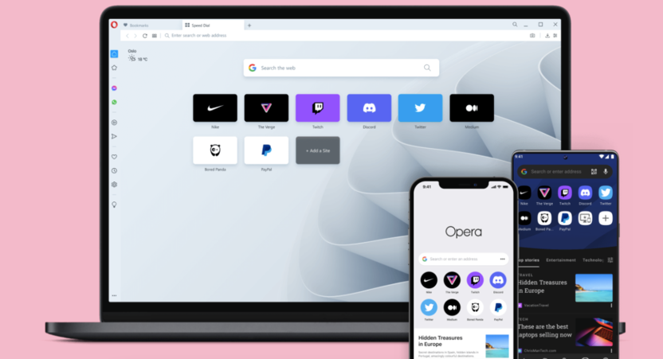

По данным GlobalStats, в октябре 2021 года Google Chrome владел 64.67% рынка. Браузер компании Google доминирует уже не первый год и, несмотря на свои недостатки, является самым популярным в мире.
Отчасти такую популярность можно списать на то, что Chrome когда-то действительно был прорывным, непохожим на все остальные браузеры. Он быстро развивается, получает новые удобные интерфейсные решения (привет, Firefox), не отпугивает аудиторию экспериментами (привет, Safari), но что еще важнее – у Google мощный бренд, а вместе с ним и маркетинг.
Более того, Google сотрудничает с людьми, стоящими за CSS, HTML и JavaScript, и напрямую влияет на то, как будет развиваться интернет, какие технологии будут применяться в новых языках разметки и т.п.
В руках Google оказались и простые пользователи, и разработчики. Из-за этого о существовании других браузеров почти забыли. Единственный, кто хоть немного держит марку (19.06% рынка) – Safari, но и то лишь благодаря безумной популярности iOS. Остальные же и 5% набрать не могут. И это совсем не заслуженно, потому что почти все остальные браузеры лучше, чем Сhrome.
В Богом забытые времена, когда во ВКонтакте еще была «стена», браузеры пичкали кучей полезных функций, они были куда более расширяемыми, а Firefox вообще превращали в монструозную махину с вертикальными табами и прочими прелестями жизни. Со временем мы всё потеряли, и браузеры ринулись усердно исповедовать минимализм. А вот Chrome начал разрастаться, причем непропорционально в соотношении функциональности к системным требованиям. Шутки про пожирание всей ОЗУ процессами Google Chrome все еще в ходу.
А что касается второй причины, то те, кто не любят Google, знают, как компания ведет «честный» бизнес и стремится захватить веб. Вряд ли пользователи смогут ей помешать, у них власти поменьше, чем у конгресса, но если есть возможность сократить дозу трекинга, то надо это сделать, даже ценой доверия своих данных другой корпорации зла.
Что происходит в мире браузеров?
Firefox
Лиса переживала не лучшие времена последние лет 10. Когда-то Firefox был одним из популярнейших браузеров, а потом рухнул под гнетом Хрома, по пути растеряв все свои фишки.
Сейчас Mozilla начала двигаться в обратном направлении и снова наращивает функциональность своего главного продукта.
Плюсы нового Firefox:
- Появилась система контейнеров. С помощью них можно внутри браузера создавать изолированные рабочие пространства со своим кэшем и набором опций.
- Mozilla все еще выступает за защиту пользовательских данных и регулярно пинает гигантов в духе Apple за введение функций, нарушающих право людей на конфиденциальность. И сама минимизирует сбор данных.
- Тесная работа с приложением Pocket.
- Есть собственный VPN-сервис, встроенный в браузер.
Недостатки:
- За годы эволюции создатели Firefox вырезали из него внушительный кусок API для разработки расширений. Поэтому мощные инструменты по ускорению браузинга, внедрения вертикальных табов и прочих мало-мальски сложных вещей больше недоступны.
- Инструменты разработчика заметно отстают от того, что предлагается в Chromium-подобных браузерах.
Edge
Мой личный фаворит. У этого браузера был неудачный старт, когда Microsoft решила писать его на собственном движке. Получился Internet Explorer нового поколения, но компания быстро поняла совершенную ошибку. Браузер переписали на движке Chromium, внедрили в него блокировщик рекламы и трекеров, а потом начали добавлять в базовую комплектацию эксклюзивные расширения, недоступные в других браузерах на том же движке.
Плюсы нового Edge:
- В Edge есть удобный заметочник, интегрируемый в Microsoft OneNote. В него можно сохранять вкладки, куски статей, скриншоты и собственные записи.
- Вертикальные табы (one love), в сотни раз упрощающие работу с большим количеством вкладок и экономящие вертикальное пространство, коего на современных дисплеях меньше, чем горизонтального.
- Продвинутая система заполнения полей (Edge лучше ориентируется при автоподставлении паспортных данных и номеров).
- Встроенный калькулятор, решающий примеры на странице.
- Режим экономии энергии, который отключает фоновые вкладки и не дает им тратить ресурсы (это спасает батарею и ОЗУ).
Недостатки:
- Из минусов я бы отметил жуткую новостную ленту с нерелевантными новостями, а также набор сомнительных дизайнерских решений (отвратное кастомное контекстное меню, невыравненные элементы интерфейса и другие мелочи).
Opera
Еще один легендарный браузер, о котором все забыли из-за Chrome. Если вы не следили за историей бренда, то Opera Software тоже отказалась от собственного движка и переписала браузер на Chromium, что пошло ему только на пользу.

Opera Software, как и Microsoft, решила сделать ставку на продуктивность и с лихвой отвесила в новый браузер полезных функций, недоступных ни в Google Chrome, ни в Firefox. При этом браузер работает шустрее и потребляет меньше ресурсов, чем детище Google.
Плюсы нового Opera:
- Chromium в основе со всеми вытекающими (расширения, DevTools и т.п.).
- Встроенный блокировщик рекламы и VPN (правда, последний недавно запретили в России).
- Удобная система мини-приложений с мессенджерами, открывающимися в боковой панели. Можно отвечать на сообщения и отправлять файлы через условный Telegram, не покидая Opera.
- Opera Flow – отдельный внутренний мессенджер для обмена сообщениями с самим собой. Можно оставлять там статьи для чтения на потом или отправлять себе файлы на мобильный телефон.
- Экспресс-панель с неограниченным количеством закладок.
- Встроенная поддержка популярных криптокошельков.
Недостатки:
- В Opera нет группировки вкладок в привычном понимании, только не очень удобные рабочие пространства.
- Нет вертикальных вкладок, как в Edge. Место в боковой панели занимают чаты и Flow.
Brave
Довольно известный браузер в кругах беспокоящихся о своей приватности. Brave прогремел несколько лет назад как единственный браузер, заботящийся о конфиденциальности пользователей. Более того, его разработчики отказались показывать рекламу в сети по умолчанию и предлагают финансовое вознаграждение тем, кто эту рекламу все же посмотрит.
Но на этом его плюсы не заканчиваются, потому что за время своего недолгого существования Brave оброс массой полезных функций.
Преимущества нового Brave:
- У браузера появился собственный независимый поисковик. Судя по всему, это аналог DuckDuckGo, то есть сервис, обособленный от Google, но помогающий находить примерно то же количество контента.
- В Brave встроили альтернативу Zoom. Мини-приложение для проведения онлайн-конференций прямо через браузер без необходимости открывать отдельные сайты и программы.
- Есть новостная лента, подстраивающаяся под интересы пользователя. Правда, работает она все равно хуже, чем та, что предлагается в Google Chrome.
- Также есть офлайн-плейлист для различных видов медиаконтента, который можно просматривать на мобильных устройствах.
Недостатки:
- Не факт, что разработчикам Brave можно доверять по поводу их отношения к приватности.
- В браузере нет вертикальных табов и других фишек, повышающих продуктивность. В этом плане он даже не на уровне Safari.